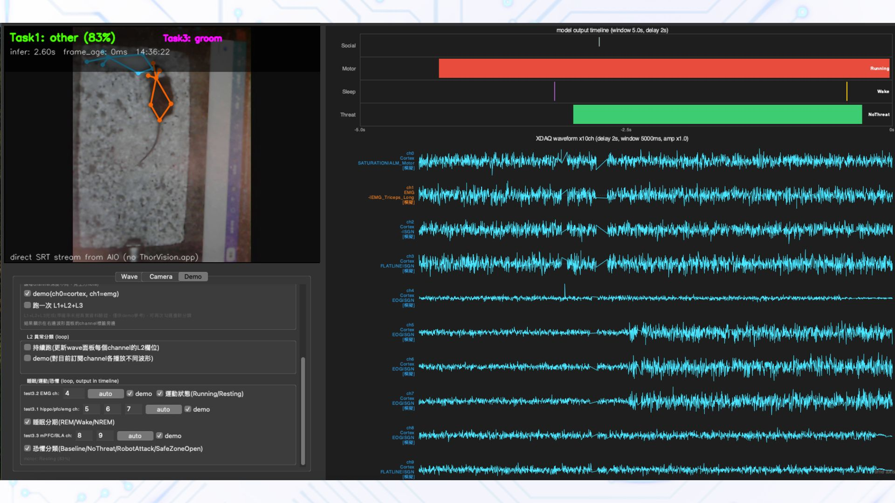

AI 生理訊號標籤、神經驅動操控與 Skills 封裝系統
Neural Signal Tagging, Closed-Loop Control & AI Skills

展示內容：多通道電生理波形、姿態追蹤、硬體閉迴路聯動
AI 生理訊號標籤與動作追蹤模型
階層式電生理波形分類
建構多階段推論模型架構，針對 Cortex、EMG 與 LFP 電生理波形進行分層識別。依序完成訊號部位判定、異常狀態檢出，並細分睡眠階段（REM/NREM）、運動狀態及壓力反應，全自動化取代耗時的人工標記。
電腦視覺關鍵點動作分類
針對實驗環境微調高解析度姿態追蹤模型，精準定位肢體關節座標。將運動軌跡向量輸入分類器，實現高信賴度的複雜互動行為辨識（如探索、梳理、防衛或社交等動作）。
訊號特徵萃取
對原始高頻波形進行時域特徵轉換與頻譜濾波，消除背景雜訊干擾，萃取高維特徵輸入分層分類器。
影像姿態微調
建立標註數據集進行模型微調訓練，提升空間連續性與節點平滑度，避免視角死角造成的抖動。
多類別標準集驗證
以權威公開資料庫標準為基準，針對多類行為與生理標籤進行跨尺度評測，達成穩健的分類指標。
模擬神經驅動即時操控系統
即時監控儀表板 (GUI)
打造多串流同步監控介面，即時渲染真實感測端回傳的高頻電生理訊號流與攝影機影像。畫面同步標註 AI 模型當前的推論結果與信心度，提供毫秒級低延遲的視覺化回饋。
閉迴路硬體部件驅動
串接真實硬體主機與驅動電路，依據模型的推論狀態動態控制實體元件。例如當波形偵測到生理異狀或出現特定行為（如衝擊或壓力動作）時，即時發送觸發信號控制 LED 閃爍模式，實現完整的閉迴路硬體聯動。
真實數據流串接
接入專業硬體裝置與擷取介面，維持高採樣率下的穩定資料流傳輸，確保底層訊號無丟失。
即時 AI 推論運算
邊緣運算層即時消化輸入訊號並套用模型推論，在視窗緩衝區內快速給出當前分類判斷。
周邊硬體致動響應
判定結果觸發控制器 GPIO 輸出，動態改變指示燈與外部聯動狀態，完成低延遲的硬體回饋。
AI 輔助工程開發技能庫
實作經驗資產化打包
將前述研發過程中所累積的「神經訊號解碼模型技術」與「硬體裝置控制/串流實作規範」進行結構化梳理。提煉出高價值的程式碼範式、API 呼叫邏輯與環境依賴，打包為 AI 可直接讀取的知識包。
零門檻賦能終端開發者
開發者只需下載並掛載此 Skills 套件至 AI 編程助理，AI 便能立即繼承整套神經訊號處理與硬體聯動的領域專家經驗。大幅縮短新功能開發生產週期，避免重複踩坑。
領域邏輯規格化
萃取訊號標籤邏輯、GUI 事件迴圈與周邊硬體通訊協議，轉化為標準化的 Prompt 模組與實作契約。
Skill 套件封裝
整合成可即插即用的設定檔與知識庫文檔，支援現代主流 Agent 與程式碼生成環境直接加載。
即時生成與拓展
使用者給出自然語言指令，AI 即可自動依照封裝規範產生穩健的驅動程式碼與分析腳本。